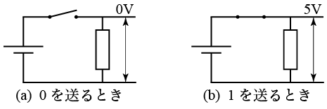
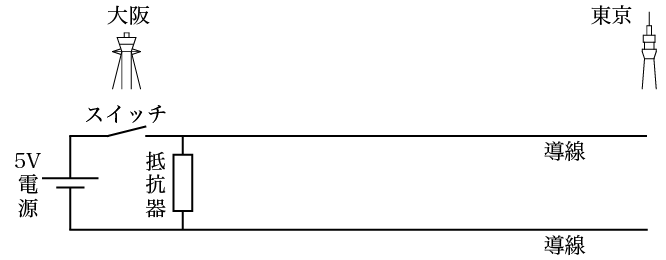
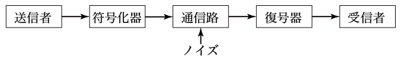
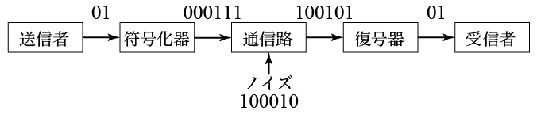
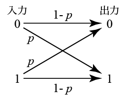

誤り訂正符号の原理を理解する基礎的な授業である． 誤り訂正符号についていくつかの符号の例を紹介し， 符号化や復号のアルゴリズムを説明する．誤り訂正の原理を説明し， 符号化によってどれだけの誤りを訂正できるようになるかを 定性的に説明する．最尤復号の定義を紹介し，すべての線形符号に適用できる 効率的な最尤復号アルゴリズムであるシンドローム復号について説明する．
このコンテンツは参考書"Vera Pless, "Introduction to the Theory of Error-Correcting Codes (Third Edition),"の序盤の部分をもとに重要なことを抜粋した ものである．より一般的で網羅された知識を得たい場合はぜひ原本を参照してほしい．
どのような通信でもエラーの問題を考慮しなければいけない． デジタル通信はエラーが生じにくい通信であると言われるが， これはみためほど単純な話ではない．例えば0Vを「0」，1Vを「1」 として扱うデジタル装置があったとする（図1.1)．

図1.1 デジタル情報を電圧で表す
この装置と導線を使って大阪-東京間でデジタル通信ができる（図1.2）．

図1.2 デジタル通信装置の例
図1.2の通信装置を使うことでデジタル通信を行うことを考える． 実際には導線は途中で電磁波などによるノイズを受け， 観測地点である東京では送信時の 0V や 5V とは異なる電圧になる． 受信側が 2.5V を境に低い電圧だった場合に「0」，高い電圧だった場合に 「1」であると判断することでデジタル通信を行うことができるが， 2.5Vの境を超えて「0」が「1」として，または逆に「1」が「0」として 受信される可能性が少ないかもしれないがゼロではない． これをデジタル通信の誤りといい，少ない時間に多くの情報を 送る高速通信になるほど誤りが起こる確率が高くなる．
送信情報にあらかじめ情報の繰り返しなどの冗長性をたせた ものに変換し（符号化），それを送信して受信者が元の情報に戻す（復号） ことで誤りが起こる確率の高い通信路でも低い誤り確率で情報を伝達 することができる．これが誤り訂正符号の技術で，デジタル通信は エラーが少ないというのは誤り訂正符号の技術まで含んだ表現である．
符号化器，復号器を含めた通信路全体のモデルは図1.3のようになる．

図1.3 通信路のモデル
例で使用した「0」と「1」のような通信に使える文字からなる集合を アルファベットという．図1.3の送信者が 発生することができる文字からなるアルファベットを情報アルファベット という．最終的に受信者が受け取ることができるアルファベットも 情報アルファベットである． これに対して通信路を通ることができるアルファベットを 符号アルファベットという．図1.3では，符号化器は 情報アルファベットを入力して符号アルファベットを出力すること， 復号器では符号アルファベットを入力して情報アルファベットを 出力することがわかる．この授業では簡単のため，情報アルファベットと 符号アルファベットは同じ集合 $\{0,1\}$ を使い，どちらも単に アルファベットという．0, 1 それぞれをビットという．
次に例として入力ビットを3回繰り返したものを符号語 （符号化器の出力文字列）とする3回繰り返し符号を考える． この符号化器は入力0に対して000，入力1に対して111，を出力する．
通信路による通信は送信者がアルファベットの複数の文字列を送信したい と思うことで始まる．例えば送信者が 2 文字の文字列 01 を送りたい とする．この文字列は符号化器により符号化の規則に従って000111 に変換される．図1.3 の矢印の上に流れる情報を追記したものが 図1.4である．送信者から 01 が送られて符号化器で 000111 に変換されている．

図1.4 通信路を用いた通信の例
通信路ではノイズの影響を受けて文字列が書き換えられる． 図1.4 の例では1ビット目と5ビット目がノイズの影響で書き換えられ （反転され）100101 になって出力する．反転される位置に1，変化しない位置に 0を置いたものがノイズのビット表現になる．
次は復号器の仕事である．3回繰り返し符号では，ノイズがなければ 000 か 111 しか送信されないはずなので，前半の 100 も後半の 101 もノイズの影響を受けていることがわかる．3 ビットのうち 単純に 0 のほうが多ければ 0, 1のほうが多ければ 1 に復号する 復号法を適用することで，この場合は受信者は正しい文字列01に 復元することができる．
次に図1.3の通信路の部分のモデル化を考える． 最も単純なモデルはビットの反転がそのビットの 前後で反転があったかどうかにかかわらず独立なもので， さらに0が1に反転する確率も1が0に反転する確率も 同じ（$p$とする），というモデルである．これは図1.5で 表されるモデルで，2元対象通信路（BSC:Binary Symmetric Channel） という．BSC の 誤り確率 $p$ をシンボル誤り確率という．

図1.5 2元対象通信路
例としてシンボル誤り確率 $p$ が 0.1 のとき，送信者が 01 という 文字列を送りたい場合，3回繰り返し符号を使うとどれだけ誤り確率 を低下させることができるかを計算する．
符号化しない場合
シンボル誤り確率が 0.1 だから 1シンボルが正しく受信される確率は
0.9 である．送信シンボルは2文字あり，それぞれの誤り確率は独立なので
2文字とも正しく受信される確率は$0.9\times0.9=0.81$．
これにより2ビットのブロックが誤る（1つでも間違って復号される）
確率は $1-0.81=0.19$
3回繰り返し符号で符号化する場合
送信者の2文字のうち最初の文字が正しく復号される確率を考える．
送信者の1文字目の情報シンボルが0の場合，符号化器で 000 に変換される．
000が通信路を通ってノイズの影響を受けると
可能な出力としては000, 001, 010, 011, 100, 101, 110, 111の
8通り考えられる．
出力が 000 になる確率は反転が0回なので $(1-p)*(1-p)*(1-p) = 0.729$
出力が 001 になる確率は反転が最後だけなので $(1-p)*(1-p)*p = 0.081$
出力が 010, 100 になる確率は掛け算の順番が違うだけなので 001 と同じ $0.081$
出力が 011, 101, 110 になる確率は反転が2回なので掛け算の
順番は違っても値は同じ $(1-p)*p*p = 0.009$
出力が 111 になる確率はすべて反転するので $p*p*p = 0.001$
0と1の多い方の文字に復号する復号法を使うので，このうち正しく
復号されるものは 000, 001, 010, 100 であるから，送信者の 0 が正しく
復号される確率は $0.729+3\times0.081=0.972$ である．
送信者の2文字目の 1 を送った場合もBSCなので同じ計算になり
$0.972$ の確率で正しく復号される．送信者の 2 文字が正しく
復号される確率はこの積になるので$0.972^2=0.944784$ となる．
逆に長さ2のブロックが誤って復号される確率は $1-0.944784=0.055216$
である．符号化を行わない場合の確率 $0.19$ に比べてブロックが
誤って受信される確率が$1/3$以下に低減できていることがわかる．
このように，誤りのあるデジタル通信路において冗長性を 与える符号化を行うことで送信ブロックの誤り確率を低減 できることがわかった．しかし3回繰り返し符号では 送りたい情報の文字数の2倍の文字数を付加しなければいけない． 情報の文字数と付加した文字数の和を符号語長といい， \[ R = \frac{\mbox{情報の文字数}}{\mbox{符号語長}} \] を符号化率という．3回繰り返し符号の符号化率は 1/3 であり， これは通信路を使って運んだ文字数の 1/3 しか情報が無いことを 意味する．高速に通信したいなら符号化率は 1 に近いほど良い．
符号化率の高さと誤り訂正能力の高さを両立する符号が価値が高い 符号といえる．誤り訂正符号理論では符号化率の低下を抑えつつ 強力な誤り訂正能力をもつ符号を探すことが大きなテーマである．
シンボル誤り確率0.2のBSCを使った場合，符号化しない場合と
3回繰り返し符号で符号化した場合について送信された 2 ビットのブロック
が誤って受信される確率をそれぞれ求めよ．
授業の6日後までにメールで提出せよ．
メールの件名（サブジェクト）は CT01 とせよ．